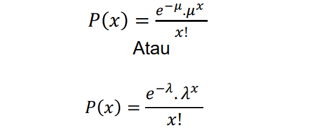

Dalam teori probabilitas dan statistika, distribusi Poisson adalah distribusi probabilitas diskret yang menyatakan peluang jumlah peristiwa yang terjadi pada periode waktu tertentu apabila rata-rata kejadian tersebut diketahui dan dalam waktu yang saling bebas sejak kejadian terakhir.
Refrensi Utama1. Nadzare Kafah Alfatiha (H1D023014)
2. Dzaky Alfikri (H1D023035)
3. Audi Makrufianto Afetama (H1D023037)
3. Dwi Bagus Purwoaji (H1D023041)
Dalam teori probabilitas dan statistika, distribusi Poisson adalah distribusi probabilitas diskret yang menyatakan peluang jumlah peristiwa yang terjadi pada periode waktu tertentu apabila rata-rata kejadian tersebut diketahui dan dalam waktu yang saling bebas sejak kejadian terakhir.
Jika suatu percobaan menghasilkan variabel random X yang menyatakan banyak-nya sukses dalam daerah tertentu atau selama interval waktu tertentu, percobaan itu disebut percobaan Poisson.
1. Banyaknya percobaan yang terjadi dalam suatu interval waktu atau suatu daerah tertentu tidak tergantung pada banyaknya hasil percobaan yang terjadi pada interval waktu atau daerah lain yang terpisah
2. Probabilitas hasil percobaan yang terjadi selama suatu interval waktu yang singkat atau daerah yang kecil, sebanding dengan panjangnya waktu atau besarnya daerah tersebut dan tidak tergantung pada banyaknya hasil percobaan yang terjadi diluar waktu atau daerah tersebut
3. Probabilitas lebih dari satu hasil percobaan yang terjadi dalam interval waktu yang singkat atau dalam daerah yang kecil dapat diabaikan.
- Jumlah X dari keluaran yang terjadi selama satu percobaan Poisson disebut Variabel random Poisson, dan distribusi probabilitasnya disebut distribusi Poisson.
- Bila x menyatakan banyaknya sukses yang terjadi , adalah rata-rata banyaknya sukses yang terjadi dalam interval waktu atau daerah tertentu, dan e = 2,718 , maka rumus distribusi Poisson adalah :

Dimana: P(x) = probabilitas kelas sukses
μ / 𝜆 = rata-rata keberhasilan =n . p
x = Banyaknya unsur berhasil dalam sampel
atau variable random diskrit
e = Konstanta= 2,7182
n = jumlah/ukuran populasi
t = banyaknya